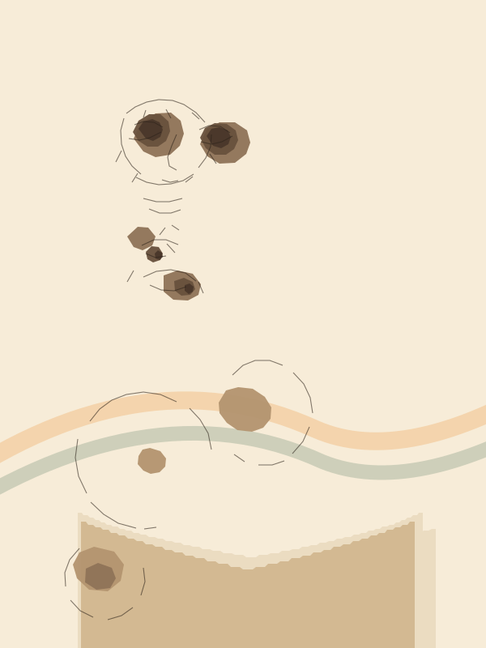

“
I am deeply beholden to you for your having agreed to accept me as the first President of your Constituent Assembly...

Temporary Chairman
Constituent Assembly of India
I am deeply beholden to you for your having agreed to accept me as the first President of your Constituent Assembly...
“ Kripalani invites Dr. Sinha to take the Chair as temporary Chairman.
“ Messages from the United States, China and Australia are read to the Assembly.
“ An election petition concerning the British Baluchistan seat is taken up.
“ Sinha’s inaugural address surveys constitution-making abroad and the Indian demand for a Constituent Assembly.
“ Deputy-chair nomination, condolence, credentials and signing of the Register complete the day’s agenda.